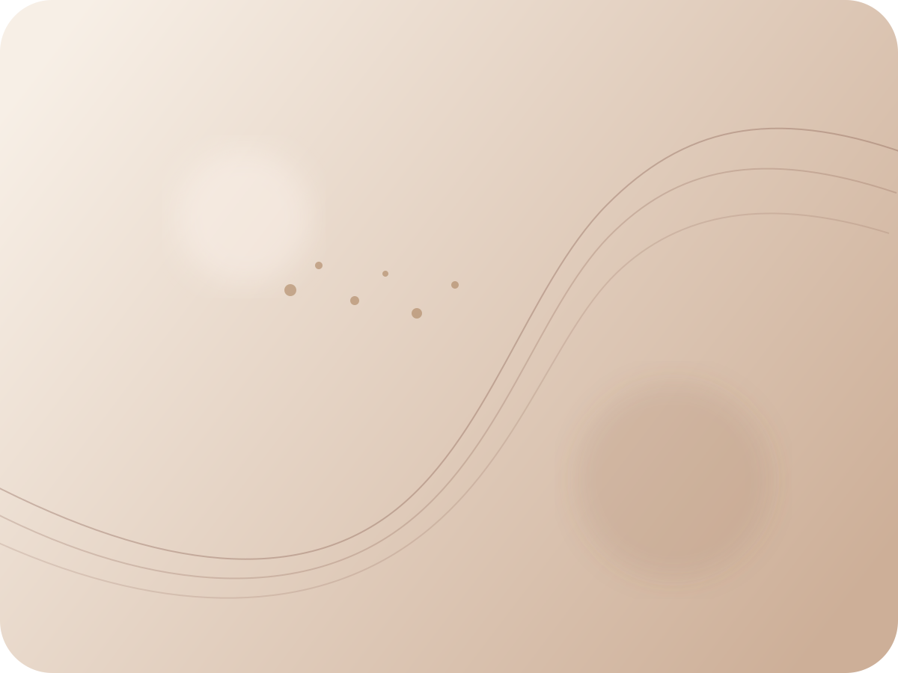
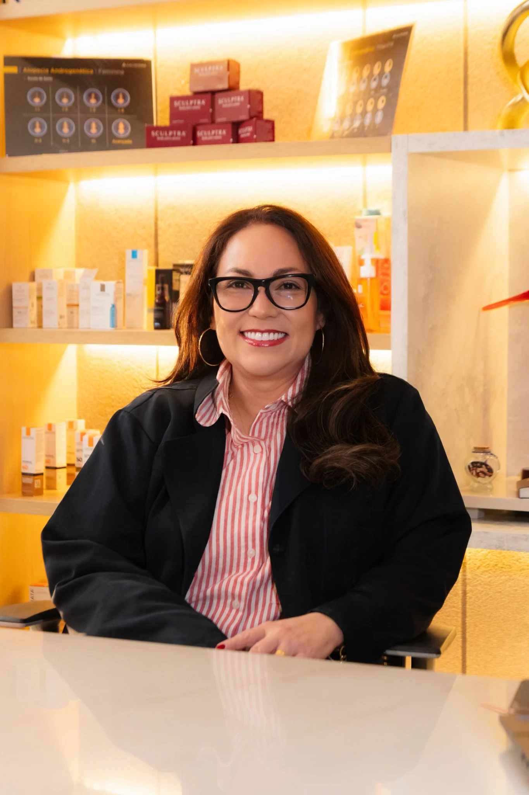
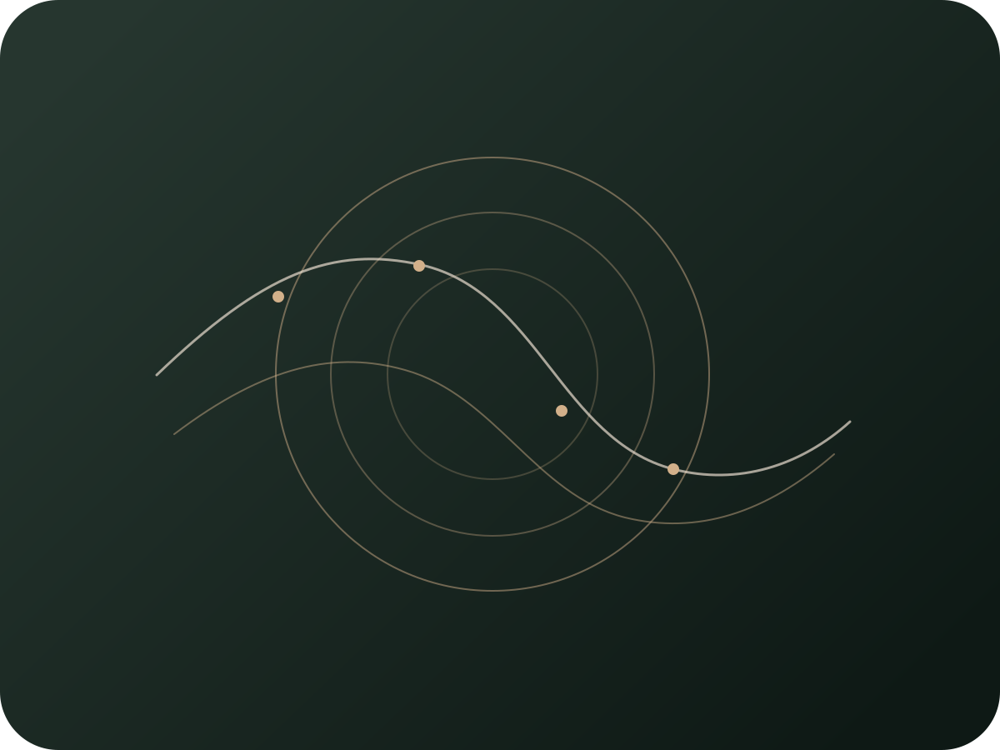
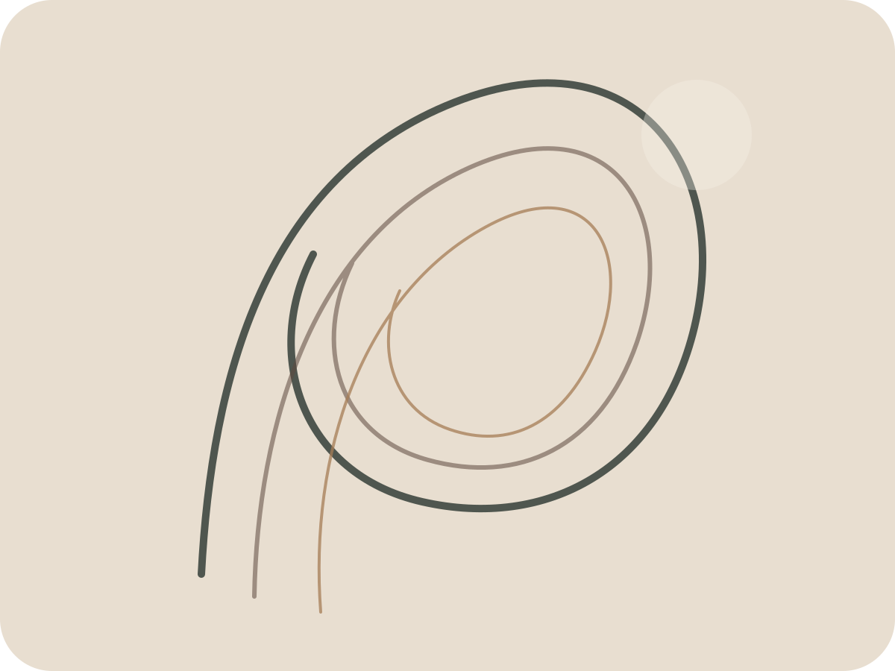
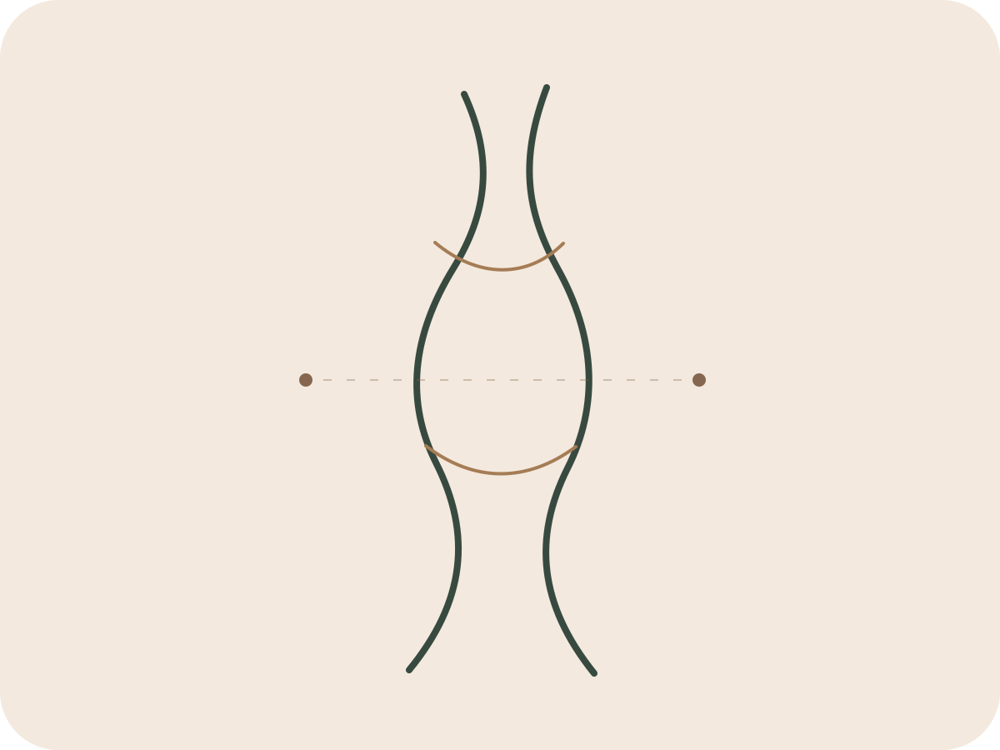
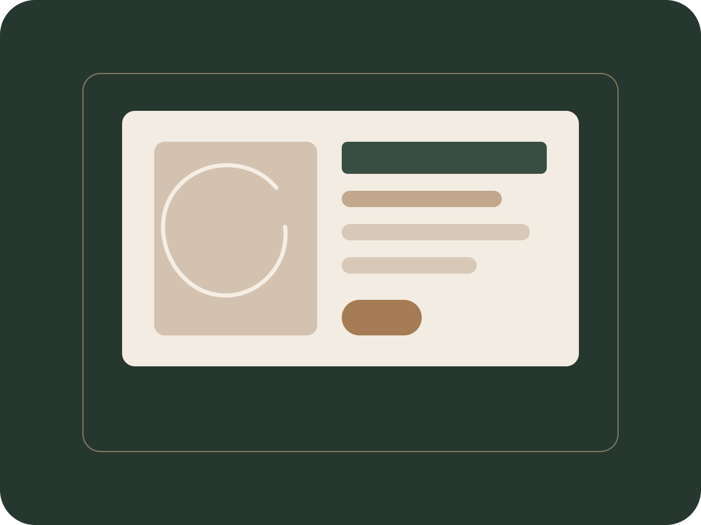
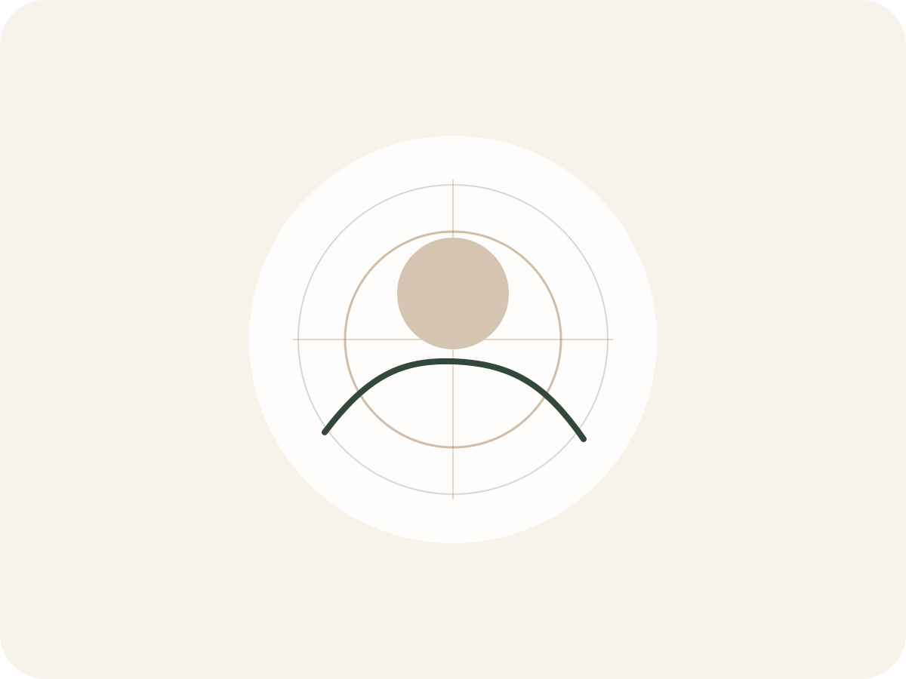

Pele
Textura, uniformidade e saúde em primeiro lugar.
Manchas, melasma, poros, marcas de acne, sensibilidade e sinais do tempo pedem um olhar individual — não uma solução pronta.
- Laser Lavieen
- Laser de CO₂
- Peeling químico
- Skinbooster
Dermatologia e estética avançada · Belém
Cuidado dermatológico individualizado para pele, cabelos, face e corpo — com segurança, tecnologia e um planejamento que respeita você.

Ciência, escuta e naturalidade em cada plano de cuidado.
Uma clínica para quem busca orientação clara, escolhas conscientes e resultados sem excessos.
Dermatologia · Tricologia · Estética facial e corporal
Por onde começar
Você não precisa chegar sabendo qual procedimento deseja. A avaliação existe para entender sua necessidade e indicar o caminho adequado.

Pele
Manchas, melasma, poros, marcas de acne, sensibilidade e sinais do tempo pedem um olhar individual — não uma solução pronta.

Face
O planejamento facial considera proporções, qualidade da pele, movimento e o que faz sentido para cada fase da vida.

Cabelos
Queda, enfraquecimento dos fios e alterações do couro cabeludo são avaliados para construir protocolos personalizados.

Corpo
Flacidez, gordura localizada, celulite e qualidade da pele corporal podem ser abordadas com tecnologias selecionadas após avaliação.
Tratamentos selecionados
A indicação correta começa pela consulta. Conheça alguns dos tratamentos disponíveis na clínica.
Ultrassom micro e macrofocado
Tecnologia a laser
Reestruturação progressiva
Renovação cutânea
Planejamento facial
Tricologia
Antes da tecnologia, existe a escuta
Procedimentos são ferramentas. O que orienta a escolha é compreender sua história, sua pele e o resultado que você procura.
Iniciar minha avaliaçãoConversamos sobre sua história, suas necessidades e suas expectativas.
A pele, o cabelo ou a região desejada são observados de forma individual.
Você recebe uma orientação clara, com possibilidades adequadas ao seu momento.
A evolução é observada para ajustar o planejamento quando necessário.
Dra. Susiane Souza · CRM 8938
A Dra. Susiane Souza une conhecimento médico, atualização constante e uma escuta cuidadosa para construir tratamentos individualizados.
Seu trabalho parte de um princípio simples: procedimentos estéticos devem valorizar a identidade de cada paciente, sem excessos e sem padronizações.
“A melhor escolha é a que faz sentido para sua necessidade, seu momento e sua identidade.”
Nosso espaço
Atendimento reservado, ambiente acolhedor e tecnologias selecionadas para cuidar de cada etapa com tranquilidade.


O que orienta nosso trabalho
Nem tudo é indicado para todo mundo. O plano nasce da avaliação, não da tendência.
O objetivo é cuidar sem apagar características ou criar resultados padronizados.
Orientações simples e transparentes para que cada decisão seja consciente.
O cuidado continua depois do procedimento, respeitando a evolução de cada paciente.
Dúvidas frequentes
As respostas abaixo são gerais. A orientação individual acontece durante a consulta.
É o momento de compreender sua necessidade, avaliar a região desejada e conversar sobre possibilidades de cuidado. A partir disso, é criado um planejamento individual.
Não. Você pode chegar apenas com sua queixa ou objetivo. A avaliação existe justamente para definir o que é adequado — inclusive quando a melhor decisão é não realizar um procedimento naquele momento.
A clínica informa atendimento por Geap, Cassi e Capesaúde. Confirme com a equipe quais consultas e serviços possuem cobertura pelo seu plano.
Travessa Barão do Triunfo, nº 3540, Edifício Infinity, sala 15, térreo, bairro Marco, Belém — Pará.
O agendamento pode ser feito diretamente pelo WhatsApp da clínica. A equipe orienta sobre horários e informações necessárias.
Seu próximo passo
Conte brevemente o que você deseja cuidar. A equipe orienta você sobre o agendamento da avaliação.
(91) 9 9924-4443 @ssclinicadermatologia Belém · Pará